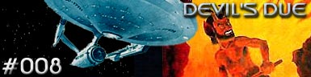

|

Escrito
por William Lansford
Respondendo a um sinal
de socorro de um sistema solar "que no deveria
existir", a Enterprise chega em Neuterra. Kirk, Xon, McCoy,
Sulu, Ilia e Chekov vo para a superfcie e encontram um paraso,
porm habitado por pessoas extremamente tristes.
No encontro com um dos lderes do planeta, Zxoler, Kirk comenta a
beleza do planeta. O lder, um ancio, diz a Kirk que toda a
vida de Neuterra ser destruda em 20 dias, por isso eles
enviaram um pedido de ajuda. Zxoler conta que h 100 anos os
habitantes poluram e destruram o planeta, quando perderam o
controle sobre a tecnologia. Um ser de nome Komether apareceu como
respostas s preces da populao e prometeu 10 sculos de
prosperidade em troca do prprio planeta ao final desse tempo.
A prosperidade sem esforo extinguiu o desejo de desenvolvimento
da populao, e eles nunca puderam deixar Neuterra, preferindo
permanecer no paraso, mas agora esse tempo acabou. Kirk explica
que a Enterprise no tem como realocar todos os habitantes do
planeta, e qualquer ajuda que a Federao pudesse enviar no
chegaria a tempo.
Kirk acaba descobrindo que Komether o Diabo em pessoa, e agora
tem de defender o povo de Neuterra em uma espcie de tribunal.
Porm o capito desconfia que o tal Diabo uma criao da
mente dos habitantes do planeta.
Curiosidades
 Este roteiro
foi aproveitado na Nova Gerao, com a tripulao de
Picard fazendo as vezes da de Kirk, em um episdio do quarto ano
tambm chamado "Devil's
Due". O tema era o mesmo, com pequenas modificaes. Este roteiro
foi aproveitado na Nova Gerao, com a tripulao de
Picard fazendo as vezes da de Kirk, em um episdio do quarto ano
tambm chamado "Devil's
Due". O tema era o mesmo, com pequenas modificaes.
Episdio
anterior | Prximo
episdio |